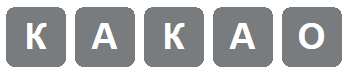
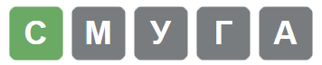

На відміну від класичної гри, UnWordle має широкий спектр кастомізації: ви можете обрати як кількість літер у слові, так і кількість спроб, аби його вгадати
 Сірі літери позначають, що їх немає в загаданому слові
Жовті літери позначають, що вони є в загаданому слові, але розташовані там у іншому місці
 Зелені літери позначають, що вони є в загаданому слові і розташовані там на своєму місці
Не вгадали? Не страшно! У нашій грі вам не обов’язково чекати наступної доби, аби спробувати ще раз. Ми піклуємося про наших гравців, і
намагаємося постійно оновлювати списки доступних слів, аби гра ставала тільки цікавішою